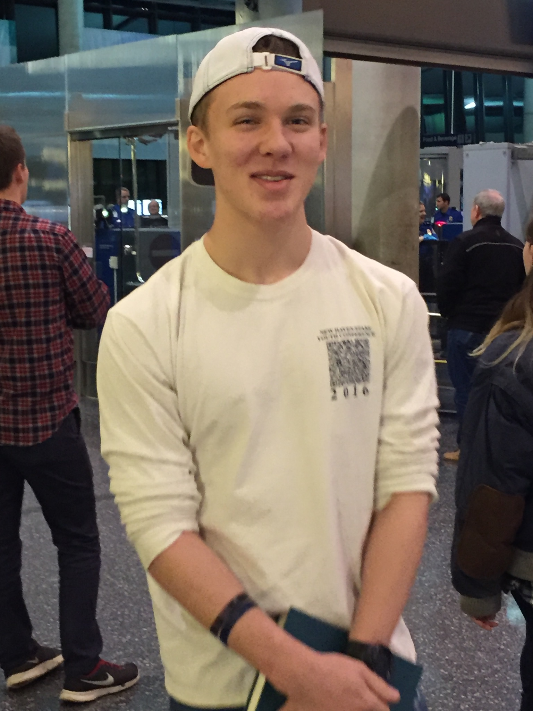

This is a mission blog for Elder Jarrett McCurdy, made by his brother Rhodric. Jarrett is currently serving in the Cote d'ivoire, Abidjan West Mission speaking French. Jarrett took four years of french in High School, which is hopefully serving him well. He was a great high school volleyball player, and competed in many school and club tournaments including multiple Boy's Junior National tournaments. Jarrett was one of the first at-home missionaries, and after things cleared up he was able to fly to the Ivory Coast towards the middle of September 2021. He is set to return in April 2023. Jarrett is a light to all those around him and has been waiting for this opportunity to serve for a long time.